library(foreign)library(readxl)library(RISEkbmRasch) # devtools::install_github("pgmj/RISEkbmRasch")library(grateful) # devtools::install_github("Pakillo/grateful")library(ggrepel)library(car)library(kableExtra)library(readxl)library(tidyverse)library(eRm)library(mirt)library(psych)library(ggplot2)library(psychotree)library(matrixStats)library(reshape)library(knitr)library(cowplot)library(formattable) library(glue)library(hexbin)library(skimr)### some commands exist in multiple packages, here we define preferred ones that are frequently usedselect <- dplyr::selectcount <- dplyr::countrecode <- car::recoderename <- dplyr::rename# file paths will need to have "../" added at the beginning to be able to render document# get itemlabelsitemlabels <-read_excel("../data/Itemlabels.xlsx") %>%filter(str_detect(itemnr, pattern ="st")) %>%select(!Dimension)spssDatafil <-"../data/2023-04-26 Prevent OSA-enkat.sav"# read SurveyMonkey datadf <-read.spss(spssDatafil, to.data.frame =TRUE) %>%select(starts_with("q0008"),q0001,q0002,q0003,q0004) %>%rename(Kön = q0002, Ålder = q0001,Bransch = q0003,Hemarbete = q0004)# SPSS format provides itemlabels too, we can save them in a dataframespssLabels <- df %>%attr('variable.labels') %>%as.data.frame()dif.kön <- df$Köndif.ålder <- df$Ålderdif.bransch <- df$Branschdif.hemarbete <- df$Hemarbetedf <- df %>%select(starts_with("q0008"))names(df) <- itemlabels$itemnr
5.1 Items
Code
itemlabels %>%kbl_rise(width =60)
itemnr
item
st1
Jag vet vem jag ska vända mig till för att få stöd och hjälp med att utföra arbetet.
st2
Det finns personer på mitt arbete som jag kan prata förtroligt med.
st3
Vi samarbetar bra på min arbetsplats.
st4
Jag visar uppskattning till mina kollegor för deras arbetsinsatser.
st5
Mina kollegor visar uppskattning för mina arbetsinsatser.
st6
Jag får tekniskt stöd vid behov.
st7
Jag kan få handledning i mitt arbete om jag behöver det.
RIdemographics(dif.ålder,"Ålder") # kanske även fixa en figur?
Ålder
n
Percent
18-29
22
3.8
30-39
103
17.8
40-49
175
30.2
50-59
215
37.1
60+
64
11.1
Code
RIdemographics(dif.bransch,"Bransch")
Bransch
n
Percent
Kontorsarbete (oavsett bransch)
284
49.1
Industri
26
4.5
Hotell, restaurang, service
8
1.4
Handel
16
2.8
Skola, utbildning
67
11.6
Vård, omsorg
99
17.1
Byggverksamhet
7
1.2
Annat
71
12.3
Code
RIdemographics(dif.hemarbete,"Antal dagar med arbete hemifrån")
Antal dagar med arbete hemifrån
n
Percent
En dag
136
23.5
Två dagar
105
18.1
Tre dagar
35
6.0
Fyra dagar
10
1.7
Fem dagar
2
0.3
Jag arbetar aldrig eller sällan hemifrån
291
50.3
5.2.1 Svarsbortfall items
Vi filtrerar bort respondenter som har färre än två svar på frågorna i delskalan.
Code
# If you want to include participants with missing data, input the minimum number of items responses that a participant should have to be included in the analysis:min.responses <-2scale.items <- itemlabels$itemnr# Select the variables we will work with, and filter out respondents with a lot of missing datadf.omit.na <- df %>%filter(length(scale.items)-rowSums(is.na(.[scale.items])) >= min.responses)RImissing(df.omit.na,"st")
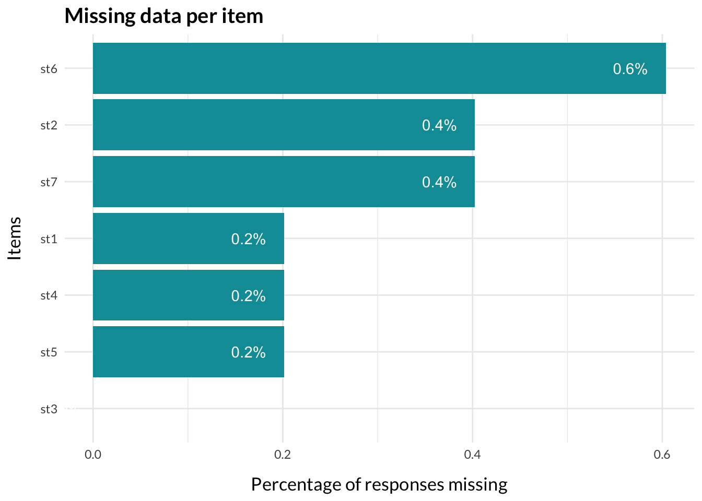
Vi har extremt få saknade svar, och tar därför bort respondenterna som inte har kompletta svar.
Vi har väldigt få svar i lägsta kategorierna, i synnerhet för item st4. Vi slår därför ihop svarskategori 0 (aldrig) och 1 (sällan) för st4.
Code
#Temporärt slå ihop svarskategorier så att analyserna funkar# df.omit.na$st1<-recode(df.omit.na$st1,"1=0;2=1;3=2;4=3;5=4",as.factor=FALSE)# df.omit.na$st2<-recode(df.omit.na$st2,"1=0;2=1;3=2;4=3;5=4",as.factor=FALSE)# df.omit.na$st3<-recode(df.omit.na$st3,"1=0;2=1;3=2;4=3;5=4",as.factor=FALSE)df.omit.na$st4 <-recode(df.omit.na$st4,"1=0;2=1;3=2;4=3;5=4",as.factor=FALSE)# df.omit.na$st5<-recode(df.omit.na$st5,"1=0;2=1;3=2;4=3;5=4",as.factor=FALSE)# df.omit.na$st6<-recode(df.omit.na$st6,"1=0;2=1;3=2;4=3;5=4",as.factor=FALSE)# df.omit.na$st4<-recode(df.omit.na$st4,"1=0;2=1;3=2;4=3;5=4",as.factor=FALSE)
5.3 Rasch-analys 1
itemnr
item
st1
Jag vet vem jag ska vända mig till för att få stöd och hjälp med att utföra arbetet.
st2
Det finns personer på mitt arbete som jag kan prata förtroligt med.
st3
Vi samarbetar bra på min arbetsplats.
st4
Jag visar uppskattning till mina kollegor för deras arbetsinsatser.
st5
Mina kollegor visar uppskattning för mina arbetsinsatser.
st6
Jag får tekniskt stöd vid behov.
st7
Jag kan få handledning i mitt arbete om jag behöver det.
RIitemfitPCM2(df.omit.na, samplesize =250, nsamples =32, cpu =8)
OutfitMSQ
InfitMSQ
OutfitZSTD
InfitZSTD
st1
0.721
0.763
-2.854
-2.512
st2
0.837
0.853
-1.392
-1.449
st3
0.698
0.678
-3.334
-3.558
st4
0.961
1.013
-0.474
0.201
st5
0.905
0.876
-1.194
-1.388
st6
1.092
1.008
0.953
0.006
st7
0.961
0.907
-0.377
-1.016
Code
RIpcmPCA(na.omit(df.omit.na))
PCA of Rasch model residuals
Eigenvalues
2.15
1.37
1.05
0.96
0.84
Code
RIresidcorr(df.omit.na, cutoff =0.2)
st1
st2
st3
st4
st5
st6
st7
st1
st2
-0.09
st3
-0.14
0.07
st4
-0.39
-0.14
0.02
st5
-0.36
-0.08
-0.01
0.37
st6
0.02
-0.29
-0.25
-0.3
-0.27
st7
0.14
-0.33
-0.26
-0.28
-0.37
-0.03
Note:
Relative cut-off value (highlighted in red) is 0.058, which is 0.2 above the average correlation.
Code
RIloadLoc(df.omit.na)
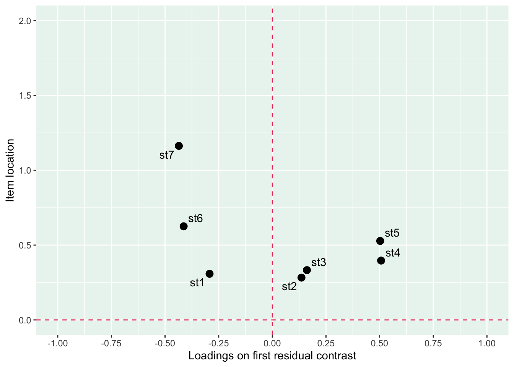
Code
RIitemCats(df.omit.na, items ="all")
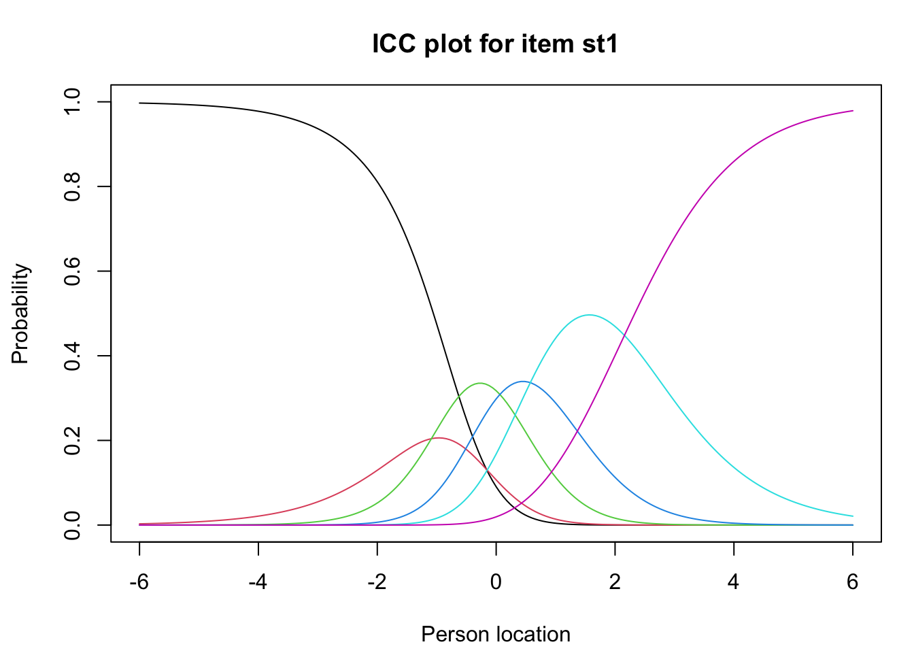
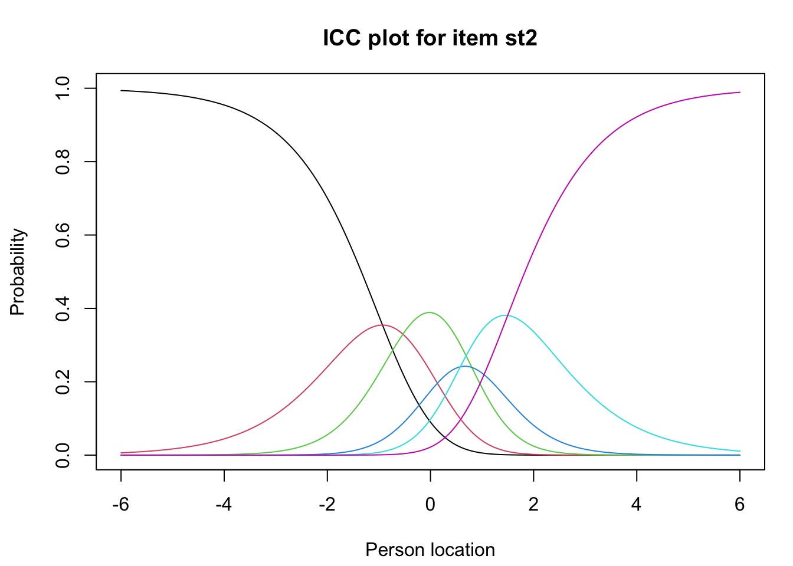
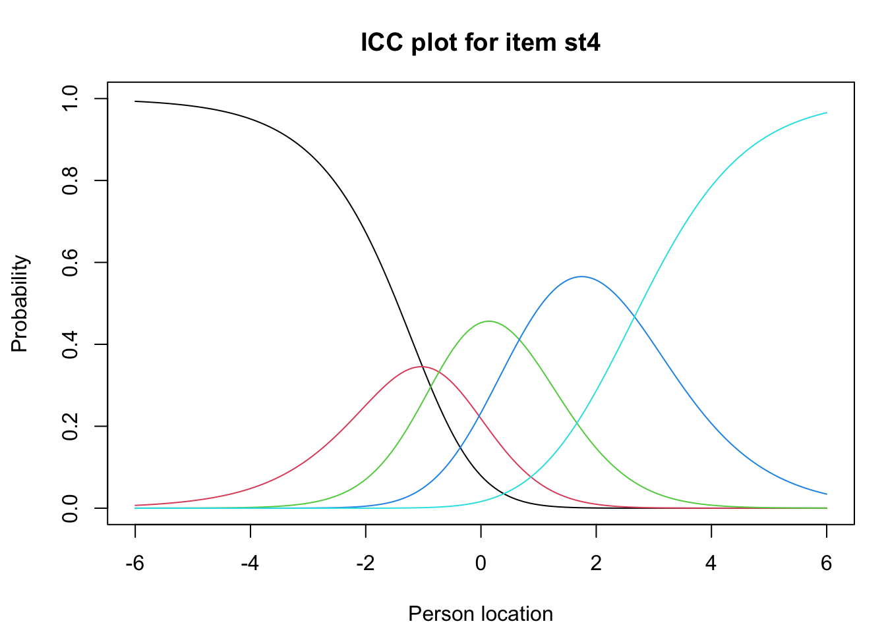
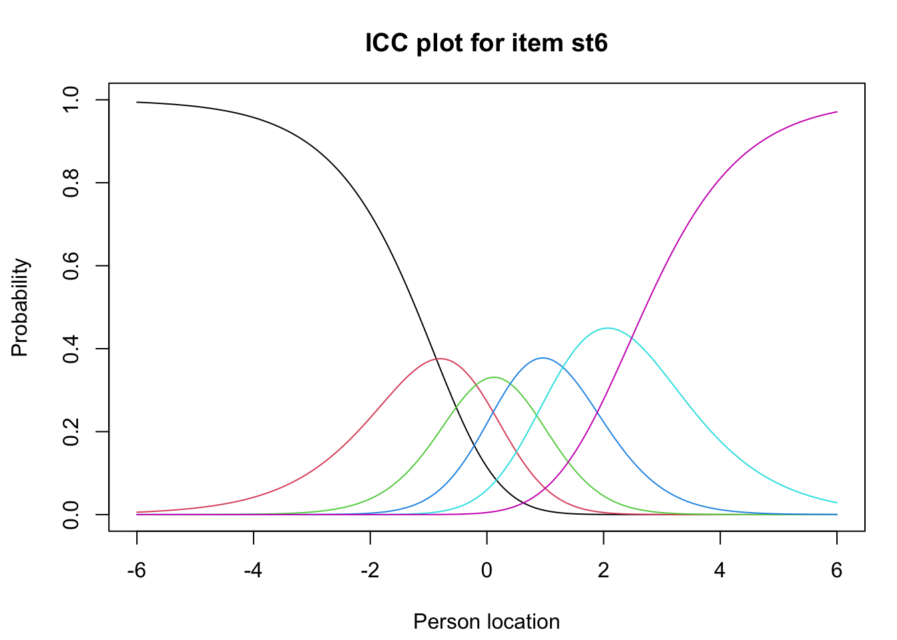
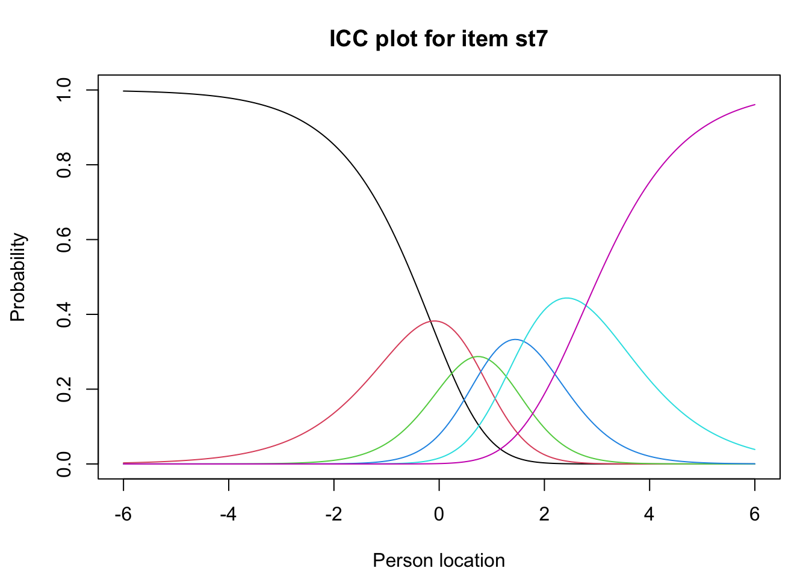
Code
# increase fig-height above as needed, if you have many itemsRItargeting(df.omit.na, xlim =c(-5,5))
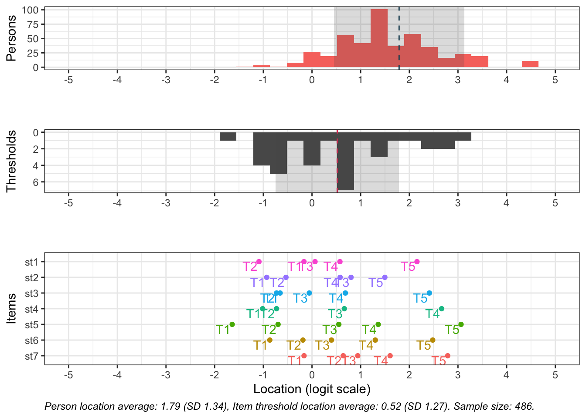
Code
RIitemHierarchy(df.omit.na)
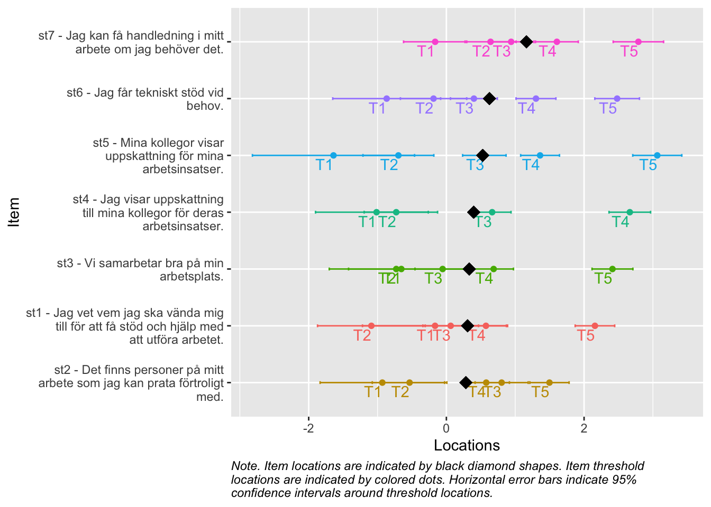
Den initiala analysen indikerar problem med dimensionalitet (PCA eigenvalue > 2 och en tydlig uppdelning i 1st contrast loadings).
Det finns även residualkorrelationer över rekommenderade tröskelvärden (st2 och st3, st4 och st5, samt st1 och st7).
Eftersom st4 både sticker ut både tematiskt (fokuserar på det egna beteendet till skillnad från resterande items) samt har en stark residualkorrelation med st5, tas detta item bort från vidare analys.
Flera items har problem med de lägsta svarskategorierna. Vi avvaktar lite med åtgärd.
Code
# create vector with eliminated itemsremoved_items <-c("st4")# select all items except those removeddf2 <- df.omit.na %>%select(!any_of(removed_items))
5.4 Rasch-analys 2
itemnr
item
st1
Jag vet vem jag ska vända mig till för att få stöd och hjälp med att utföra arbetet.
st2
Det finns personer på mitt arbete som jag kan prata förtroligt med.
st3
Vi samarbetar bra på min arbetsplats.
st5
Mina kollegor visar uppskattning för mina arbetsinsatser.
st6
Jag får tekniskt stöd vid behov.
st7
Jag kan få handledning i mitt arbete om jag behöver det.
RIitemfitPCM2(df2, samplesize =250, nsamples =32, cpu =8)
OutfitMSQ
InfitMSQ
OutfitZSTD
InfitZSTD
st1
0.66
0.702
-3.655
-3.208
st2
0.837
0.861
-1.548
-1.424
st3
0.719
0.72
-2.902
-2.987
st5
1.048
1.003
0.534
-0.21
st6
1.018
0.968
0.16
-0.233
st7
0.88
0.861
-1.309
-1.466
Code
RIpcmPCA(na.omit(df2))
PCA of Rasch model residuals
Eigenvalues
1.86
1.25
1.06
0.94
0.88
Code
RIresidcorr(df2, cutoff =0.2)
st1
st2
st3
st5
st6
st7
st1
st2
-0.15
st3
-0.19
0.07
st5
-0.35
-0.04
0.05
st6
-0.05
-0.35
-0.27
-0.24
st7
0.08
-0.39
-0.28
-0.33
-0.1
Note:
Relative cut-off value (highlighted in red) is 0.032, which is 0.2 above the average correlation.
Code
RIloadLoc(df2)
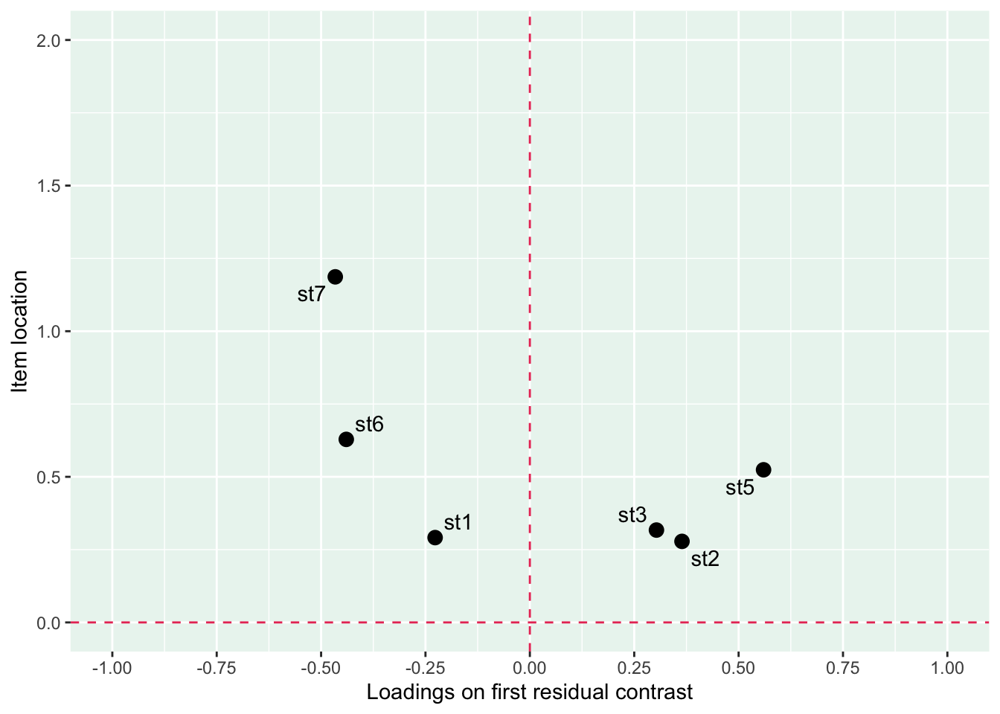
Code
RIitemCats(df2, items ="all")
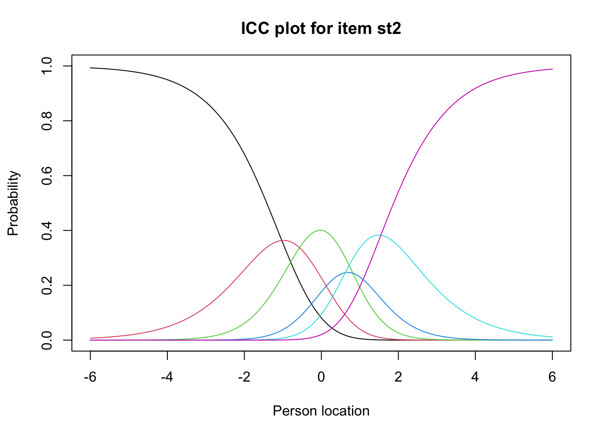
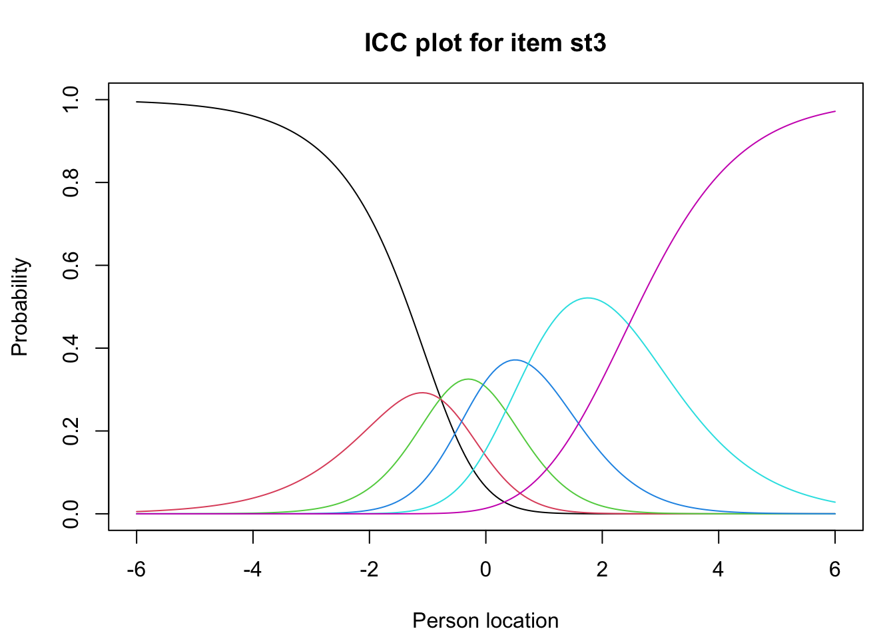
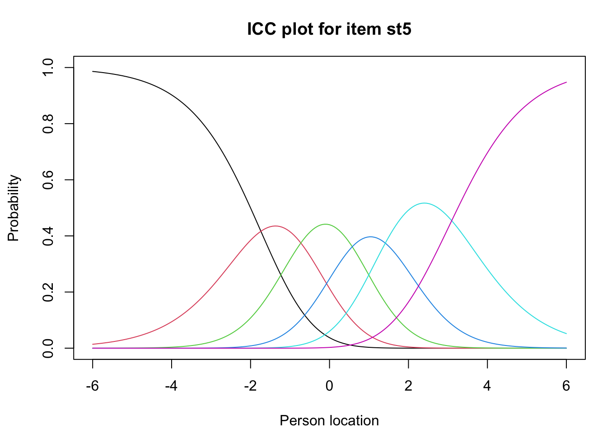
Code
# increase fig-height above as needed, if you have many itemsRItargeting(df2)
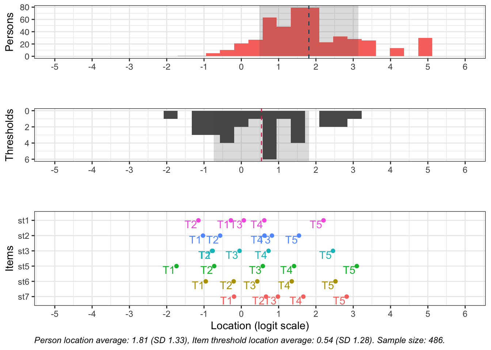
Code
RIitemHierarchy(df2)
Vi har två kluster av items, ett med items 1, 6 och 7 som handlar om mera praktiskt stöd i arbetet, och ett med items 2, 3 och 5 som handlar om socialt stöd.
Eftersom st3 har något hög residualkorrelation med både st2 och st5 tar vi bort st3 från vidare analys.
Vi slår samman de två lägsta svarskategorierna för st1 eftersom de är oordnade.
Även st2 har problem, men i mitten av skalan. Vi slår därför samman svarskategori 0+1 och 2+3.
Code
# create vector with eliminated itemsremoved_items <-c("st4", "st3")# select all items except those removeddf2 <- df2 %>%select(!any_of(removed_items)) %>%mutate(st1 =recode(st1, "1=0;2=1;3=2;4=3;5=4"),st2 =recode(st2, "1=0;2=1;3=1;4=2;5=3") )
5.5 Rasch-analys 3
itemnr
item
st1
Jag vet vem jag ska vända mig till för att få stöd och hjälp med att utföra arbetet.
st2
Det finns personer på mitt arbete som jag kan prata förtroligt med.
st5
Mina kollegor visar uppskattning för mina arbetsinsatser.
st6
Jag får tekniskt stöd vid behov.
st7
Jag kan få handledning i mitt arbete om jag behöver det.
RIitemfitPCM2(df2, samplesize =250, nsamples =32, cpu =8)
OutfitMSQ
InfitMSQ
OutfitZSTD
InfitZSTD
st1
0.612
0.633
-4.585
-4.364
st2
0.859
0.872
-1.336
-1.641
st5
1.065
1.033
0.865
0.206
st6
0.889
0.861
-1.17
-1.382
st7
0.765
0.749
-2.764
-2.974
Code
RIpcmPCA(na.omit(df2))
PCA of Rasch model residuals
Eigenvalues
1.68
1.32
1.14
0.86
0.00
Code
RIresidcorr(df2, cutoff =0.2)
st1
st2
st5
st6
st7
st1
st2
-0.05
st5
-0.35
0.03
st6
-0.13
-0.3
-0.28
st7
0.01
-0.36
-0.37
-0.21
Note:
Relative cut-off value (highlighted in red) is -0.001, which is 0.2 above the average correlation.
Code
RIloadLoc(df2)
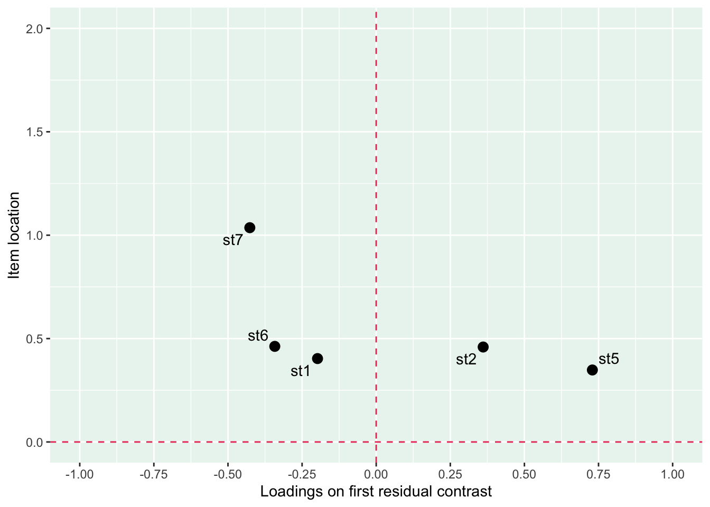
Code
RIitemCats(df2, items ="all")
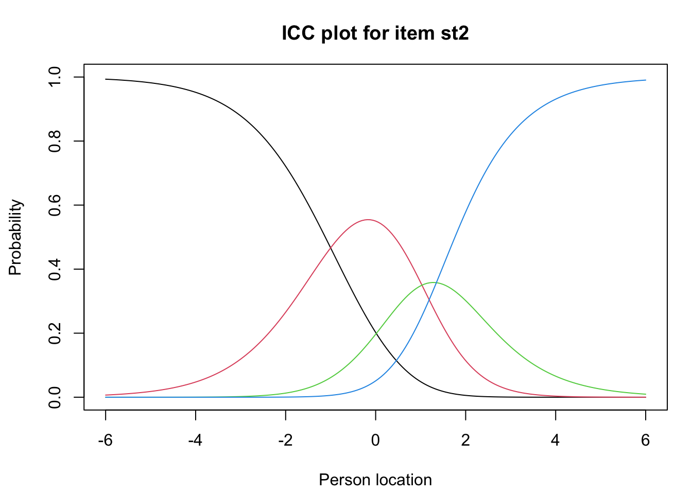
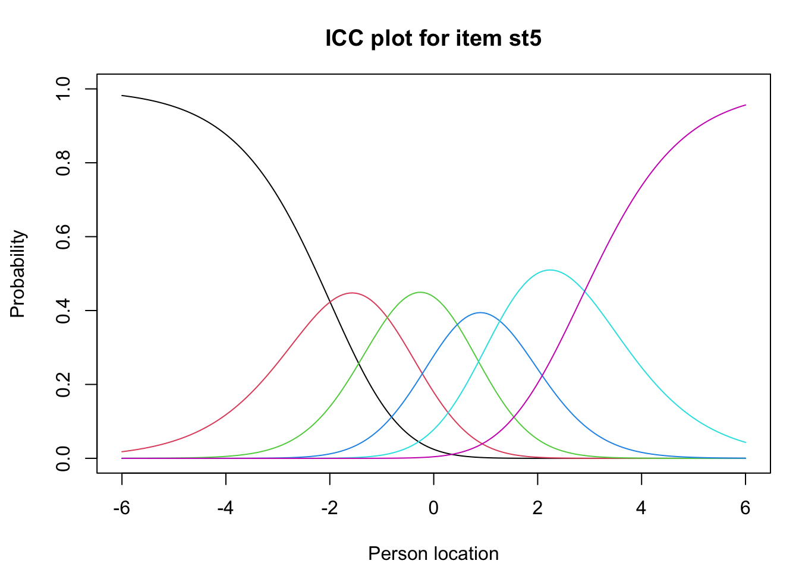
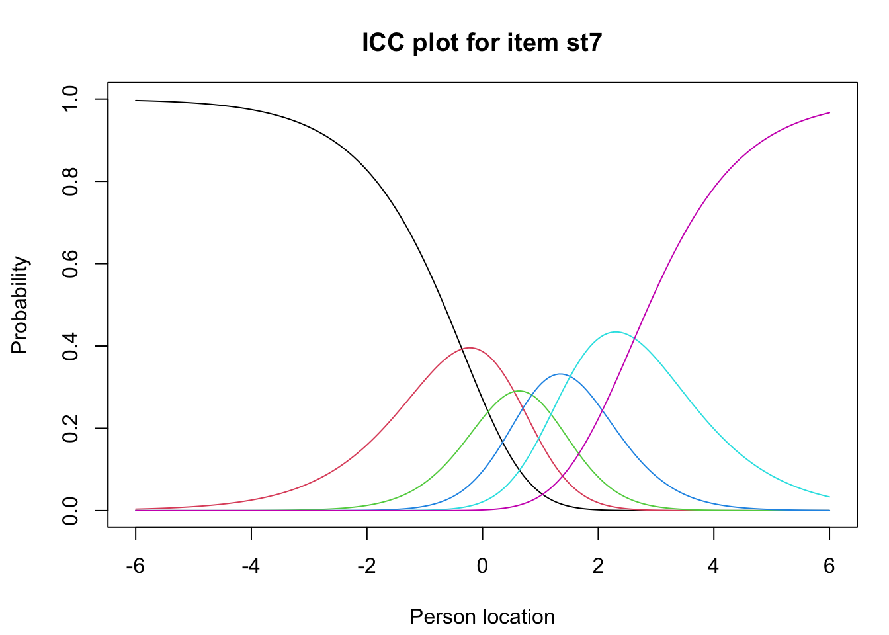
Code
# increase fig-height above as needed, if you have many itemsRItargeting(df2)
Code
RIitemHierarchy(df2)
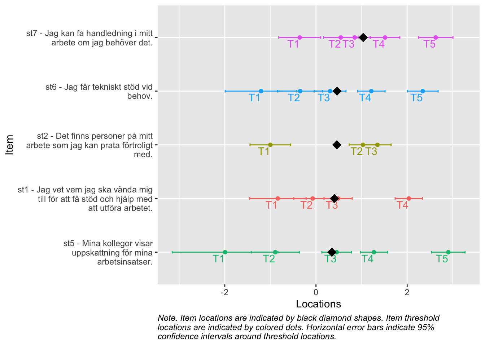
5.5.1 Targeting
Code
# increase fig-height above as needed, if you have many itemsRItargeting(df2)
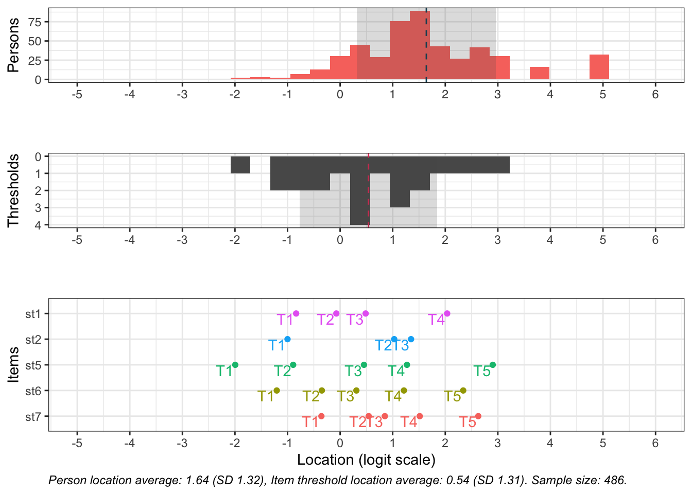
Figur 5.1: Targeting för området Stöd
Analysen visar att st1 har en något låg item fit, men ändå över MSQ 0.6. Det finns också två residualkorrelationer som går strax över gränsvärdet, men ligger mycket nära. Vi gör inga ytterligare åtgärder.
5.6 DIF-analysis
En DIF-analys bör inte inkludera svarskategorier med för få svar. Därför har svarskategorier med färre än 50 svar antingen exkluderas eller slagits ihop med andra svarskategorier (se avsnittet om bakgrundsdata för exakt antal svar per ordinarie kategori). DIF-variablerna omkodades till att innehålla följande kategorier:
Kön: man, kvinna
Ålder: 30-39, 40-49, 50-59, 60+
Bransch: kontorsarbete, ej kontorsarbete
Hemarbete: aldrig eller sällan, en dag, minst två dagar
Koden nedan specificerar exakt hur omkodningen gick till.
Code
# Omkodning för köndif.kön <-recode(dif.kön,"'Annat'=NA;'Vill ej uppge'=NA")# Omkodning för ålderdif.ålder <-recode(dif.ålder,"'18-29'=NA")# Omkodning för branschdif.bransch <-recode(dif.bransch,"'Industri'='Ej kontorsarbete';'Hotell, restaurang, service'='Ej kontorsarbete';'Handel'='Ej kontorsarbete';'Skola, utbildning'='Ej kontorsarbete';'Vård, omsorg'='Ej kontorsarbete';'Byggverksamhet'='Ej kontorsarbete';'Annat'='Ej kontorsarbete'")#Omkodning för hemarbetedif.hemarbete <-recode(dif.hemarbete,"'Fem dagar'='Minst två dagar';'Fyra dagar'='Minst två dagar';'Tre dagar'='Minst två dagar';'Två dagar'='Minst två dagar'")